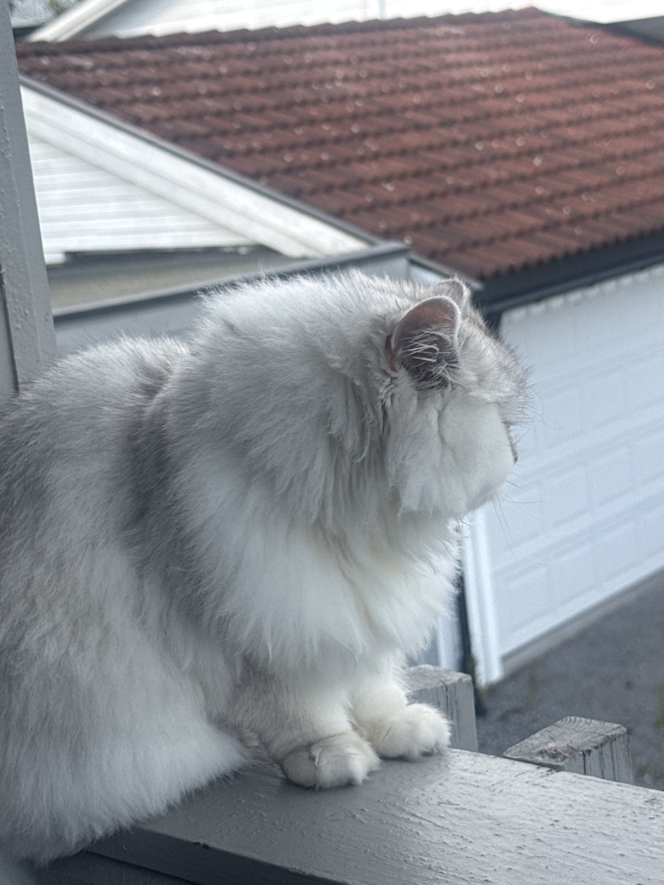

Fakta om damen i huset
Alt du trenger å vite før du forsøker å ta henne opp uten tillatelse.
- Navn
- BellaUttales med respekt
- Rase
- PerserSølvskygge / chinchilla
- Pels
- Sølv & snøMørkere maske og ører
- Øyne
- RavSer rett gjennom deg
- Hale
- EnormEgen postadresse
- Favorittsted
- VerandaenUtsikt over hele gata
En liten løve i pysjamas
Bella er en sølvskyggeperser: hvit i bunnen, med sølvgrå skygge langs rygg, maske og ører — som om noen har pustet aske over en snøfonn. Pelsen er lang, myk og aldeles upraktisk, og hun vet det godt.
Hun ber ikke om oppmerksomhet. Hun setter seg midt i rommet og venter på at du skal forstå.
Under all pelsen er hun overraskende liten, varm og tett — og en av de rolige typene. Hun møter fremmede med et langt, vurderende blikk før hun bestemmer seg. Blir du godkjent, får du varmen hennes på fanget resten av kvelden.
Målt over tid, med stor nøyaktighet
Basert på flere år med feltobservasjon fra sofaen.
Fire bilder, null dårlige vinkler
Klikk på et bilde for å se det stort. Bruk piltastene til å bla.
En helt vanlig dag
Bella lever etter en tidsplan hun har satt selv, og som resten av husstanden har lært seg å følge. Avvik meldes høylytt.
Vekking
Én pote i ansiktet. Vennlig, men bestemt.
Frokost
Serveres presist. Klokka er til pynt.
Verandaskift
Overvåker gata, bilene og naboens katt.
Solflekk nr. 2
Flytter seg med sola, aldri motsatt vei.
Inspeksjon
Alle rom kontrolleres. Lukkede dører noteres.
Fangetid
Velger et fang. Valget er endelig.

«Hun er ikke bare en katt. Hun er stemningen i huset.»